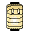

Kana Study Guide
A reference for hiragana and katakana in gojūon order. Click on each character to show or hide the romanji.
Font

KanaBuddyA reference for hiragana and katakana in gojūon order. Click on each character to show or hide the romanji.